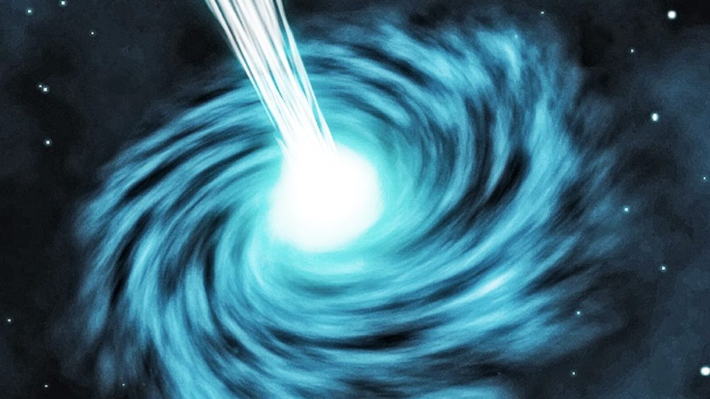

In general relativity, a white hole is a theoretical region of spacetime and singularity that cannot be entered from the outside, although energy-matter, light and information can escape from it. In this sense, it is the reverse of a black hole, which can be entered only from the outside and from which energy-matter, light and information cannot escape. White holes appear in the theory of eternal black holes. In addition to a black hole region in the future, such a solution of the Einstein field equations has a white hole region in its past.This region does not exist for black holes that have formed through gravitational collapse, however, nor are there any observed physical processes through which a white hole could be formed. Supermassive black holes (SBHs) are theoretically predicted to be at the center of every galaxy and that possibly, a galaxy cannot form without one. Stephen Hawking and others have proposed that these supermassive black holes spawn a supermassive white hole.
The possibility of the existence of white holes was put forward by Russian cosmologist Igor Novikov in 1964.White holes are predicted as part of a solution to the Einstein field equations known as the maximally extended version of the Schwarzschild metric[clarification needed] describing an eternal black hole with no charge and no rotation. Here, "maximally extended" refers to the idea that the spacetime should not have any "edges": for any possible trajectory of a free-falling particle (following a geodesic) in the spacetime, it should be possible to continue this path arbitrarily far into the particle's future, unless the trajectory hits a gravitational singularity like the one at the center of the black hole's interior. In order to satisfy this requirement, it turns out that in addition to the black hole interior region that particles enter when they fall through the event horizon from the outside, there must be a separate white hole interior region, which allows us to extrapolate the trajectories of particles that an outside observer sees rising up away from the event horizon. For an observer outside using Schwarzschild coordinates, infalling particles take an infinite time to reach the black hole horizon infinitely far in the future, while outgoing particles that pass the observer have been traveling outward for an infinite time since crossing the white hole horizon infinitely far in the past (however, the particles or other objects experience only a finite proper time between crossing the horizon and passing the outside observer). The black hole/white hole appears "eternal" from the perspective of an outside observer, in the sense that particles traveling outward from the white hole interior region can pass the observer at any time, and particles traveling inward, which will eventually reach the black hole interior region can also pass the observer at any time. Just as there are two separate interior regions of the maximally extended spacetime, there are also two separate exterior regions, sometimes called two different "universes", with the second universe allowing us to extrapolate some possible particle trajectories in the two interior regions. This means that the interior black-hole region can contain a mix of particles that fell in from either universe (and thus an observer who fell in from one universe might be able to see light that fell in from the other one), and likewise particles from the interior white-hole region can escape into either universe. All four regions can be seen in a spacetime diagram that uses Kruskal–Szekeres coordinates (see figure). In this spacetime, it is possible to come up with coordinate systems such that if you pick a hypersurface of constant time (a set of points that all have the same time coordinate, such that every point on the surface has a space-like separation, giving what is called a 'space-like surface') and draw an "embedding diagram" depicting the curvature of space at that time, the embedding diagram will look like a tube connecting the two exterior regions, known as an "Einstein-Rosen bridge" or Schwarzschild wormhole.Depending on where the space-like hypersurface is chosen, the Einstein-Rosen bridge can either connect two black hole event horizons in each universe (with points in the interior of the bridge being part of the black hole region of the spacetime), or two white hole event horizons in each universe (with points in the interior of the bridge being part of the white hole region). It is impossible to use the bridge to cross from one universe to the other, however, because it is impossible to enter a white hole event horizon from the outside, and anyone entering a black hole horizon from either universe will inevitably hit the black hole singularity. Note that the maximally extended Schwarzschild metric describes an idealized black hole/white hole that exists eternally from the perspective of external observers; a more realistic black hole that forms at some particular time from a collapsing star would require a different metric. When the infalling stellar matter is added to a diagram of a black hole's history, it removes the part of the diagram corresponding to the white hole interior region.But because the equations of general relativity are time-reversible – they exhibit Time reversal symmetry – general relativity must also allow the time-reverse of this type of "realistic" black hole that forms from collapsing matter. The time-reversed case would be a white hole that has existed since the beginning of the universe, and that emits matter until it finally "explodes" and disappears.Despite the fact that such objects are permitted theoretically, they are not taken as seriously as black holes by physicists, since there would be no processes that would naturally lead to their formation; they could exist only if they were built into the initial conditions of the Big Bang.Additionally, it is predicted that such a white hole would be highly "unstable" in the sense that if any small amount of matter fell towards the horizon from the outside, this would prevent the white hole's explosion as seen by distant observers, with the matter emitted from the singularity never able to escape the white hole's gravitational radius.